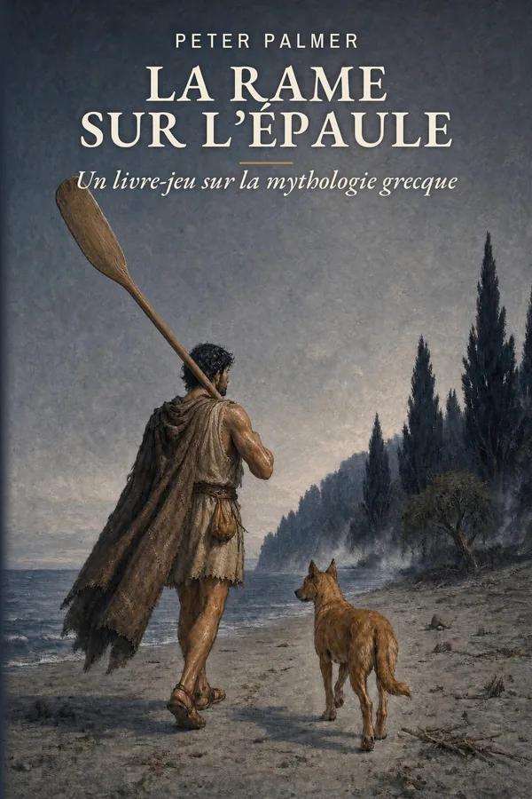

Mythologie grecque · dès 10 ans
La rame sur l'épaule
Un livre-jeu sur la mythologie grecque
La nuit où le mât du navire se brise, vous serrez votre rame et attendez la vague. Vous vous réveillez sur une plage grise, sous un ciel que vous ne reconnaissez pas. À côté de vous, il n'y a qu'un jeune chien fauve qui semble savoir où aller. Et tous ceux que vous croisez, tôt ou tard, veulent connaître votre nom.
Vous vous appelez Anfialo. Vous êtes le fils d'Euryloque et le petit-fils d'Ulysse, et votre famille a une dette ouverte avec la mer. Pour la solder, il faudra choisir à chaque pas quel chemin prendre, à qui vous fier, quand combattre et quand fuir, et que répondre à ceux qui vous mettent à l'épreuve.
Un seul chemin mène jusqu'au bout.
Prochainement